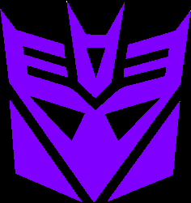
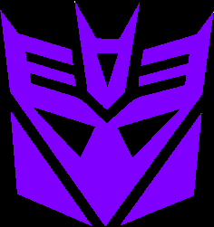

The
Fury of Bonecrusher (Wal-Mart Exclusive)

The
Fury of Bonecrusher (Wal-Mart Exclusive)
Set Price
: $30 U.S.
(NOTE: Because this set is composed of repaints,
this is not a full-blown review. This mainly covers any changes made to
the set and the color scheme, and merely compares it to the original versions
of these molds. For a review on the original TF1 deluxe Bonecrusher mold,
go
here
. For a review on the original
TF1 voyager Ironhide mold, go
here
.)
Bonecrusher
Allegiance
: Decepticon
Size
: Deluxe
Difficulty of Transformation
: Medium
Color Scheme
: Light tan, dull tannish
pea green, and some dark dull gray, black, light metallic silvery blue,
dark metallic bronze, silver, and light red
Individual Rating
: 9.6
This version of Bonecrusher
is more of a variant with battle damage as opposed to a true "redeco".
The main difference color-wise is that this version's tan is a few shades
lighter than the original's, giving it a little more of a washed-out, "desert-y"
look. The biggest difference when it comes to his paint apps are that Bonecrusher
now has several "paint scar" paint apps along a fair amount of his vehicle
mode and parts of his robot mode, as well. I love the asymmetrical look
that this gives to Bonecrusher, particularly in robot mode where it looks
like he's only half-functioning. The copper also looks good on the parts
of his robot mode that it's painted on. However, all the "battle damage"
paint apps do take away a few of Bonecrusher's previous paint apps-- his
headlights are now bare, as well as a few other minor paint apps in robot
mode. Overall I think the trade-off is worth it, though. The shades of
pea green and dark dull gray plastic are the same on this version compared
with the initial, as are the shades of light metallic silvery blue and
light red used for paint applications.
No mold changes have
been made to this version of Bonecrusher.
Bonecrusher Tech Specs
:
Strength: 9.0
Intelligence: 5.0
Speed: 5.0
Endurance: 10.0
Rank: 6.0
Courage: 8.0
Fireblast: 7.0
Skill: 5.0
Ironhide
Allegiance
: Autobot
Size
: Voyager
Difficulty of Transformation
: Very
Hard
Color Scheme:
Dull flat navy blue,
milky gray, silver, and some metallic silvery blue, electric blue, light
chalky tan, dark metallic gunmetal gray, dull milky grayish brown, dull
red, and light pale yellowish gold
Individual Rating
: 9.5
This redeco of Ironhide
has all the mold changes that
Recon Ironhide
has, but its color scheme seems to be loosely based on the TF1
Offroad
Ironhide
redeco. A dull, flat blue is the main color on this Ironhide,
as opposed to black. Gray is still Ironhide's other main color, but it's
a bit duller on this version, giving Ironhide a less-contrasty, more "muted"
look this time around, but also one that isn't as monochrome as his movie-accurate
deco. Just like Offroad Ironhide, this version also has some mud "splatters"
on his vehicle mode, which look quite good this time around, with some
nice spray apps just about where you'd expect to see them. That said, the
tires are also a rather ugly grayish brown to try to make them look muddy--
it doesn't really work. They're too brown with not enough black/gray in
the mix, and it just ends up looking wrong. Beyond the obvious mud splatters
and a healthy dose of silver to make him look more metallic and provide
contrast, Ironhide has several colors devoted entirely to accents here
and there-- the light electric blue on some of his robot parts, a dark
gunmetal gray front bumper, golden-yellow headlights, dull red taillights,
metallic silvery blue on his front window... all of the paint apps look
great where they are, and help to give a bit more variation to the overall
dull color scheme. That said, the huge silver Autobot symbol on the roof
is a bit much (I've never been a big fan of huge allegiance symbols-- they
might as well be bullseyes for these "robots in disguise"). Some paint
apps on his rooflights and head also wouldn't have hurt, but those are
the only real places where there's some details
desperately
needing
some paint.
Beyond the Recon Ironhide
changes, no mold changes have been made to this version of Ironhide.
Ironhide Tech Specs:
Strength: 8.0
Intelligence: 6.0
Speed: 5.0
Endurance: 9.0
Rank: 8.0
Courage: 9.0
Fireblast: 6.0
Skill: 5.0
The "Fury of Bonecrusher"
set is the better of the two Wal-Mart "Hunt for the Decepticons" voyager/deluxe
two-packs, with both toys being solid molds with good color schemes. I
wish Bonecrusher wasn't so similiar to his initial release, but this version
of Ironhide color-wise comes out slightly ahead of Recon Ironhide, and
with all the same awesome accessories. If you don't have the initial deluxe
version of the Bonecrusher mold, this set is a very easy recommendation;
if you do, you may want to just buy the RotF Recon Ironhide mold seperately,
as this Ironhide's deco job isn't SO good where I'd recommend it despite
essentially getting a double of your Bonecrusher.
The Fury of Bonecrusher Bio
:
After the defeat of Megatron and The
Fallen, Bonecrusher resolved to destroy every Autobot he could find, if
it was the last thing he ever did.
Reviews by Beastbot
Back to
Transformers: Autobot Alliance Index